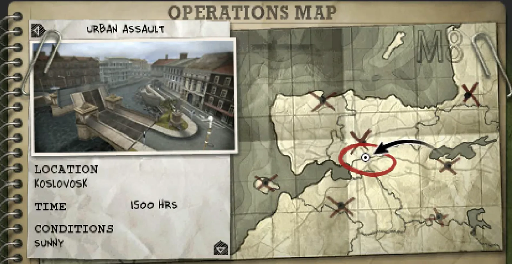
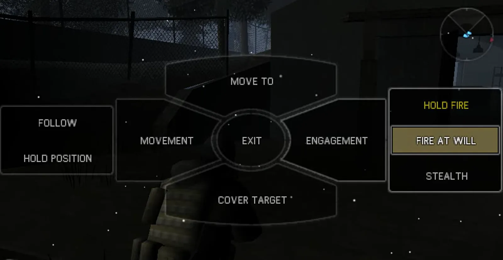
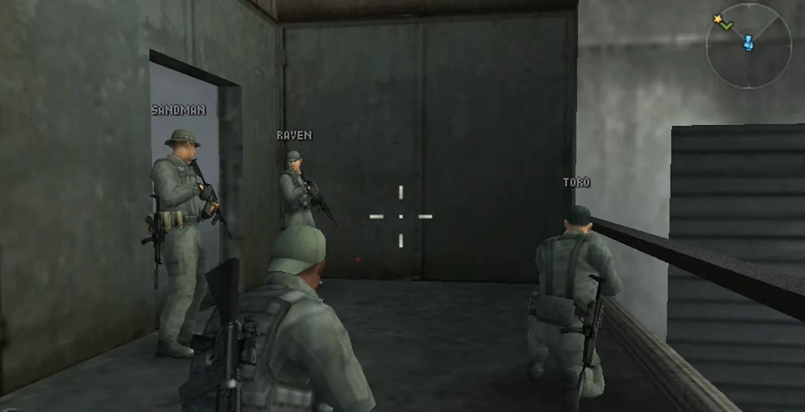

One of my goals with Fireteam Bravo 3 was to bring a new narrative perspective to the successful fireteam bravo series.
Previously the series had been about getting clear orders, going in, executing the orders and getting out all while being guided by a mission operator that knew everything that was going on.

I proposed the idea, 'what if something went wrong and the Seals had to figure out things on their own?' which eventually became the basis for the game.

In the first two games, the front end and in-game UI were all high-tech. I pushed for this notebook design to help reinforce this on-the-ground offline feel.

I was responsible for laying out the core mission structure, as well as implementing multiple level scenarios.
We also brought over tactical command elements that we had created in Tactical Strike where players could give commands to teammates, each level was also fully playable with online co-op where these commands would change to verbal orders.
I was also responsible for the AI design of teammates and enemies. Teammates were a particular design challenge because they needed to be always out of the way of the player shooting but always visible and looking effective.
I also designed a system where teammates would head towards where the player needed to go if no enemies threats were detected to naturally drive the player forward.
Key Contributions
- Proposed 'gone wrong' narrative concept that became basis for the game
- Designed notebook UI to reinforce on-the-ground feel
- Created core mission structure and multiple level scenarios
- Designed teammate AI that supports without obstructing player
- Created system where teammates head toward objectives when no threats detected